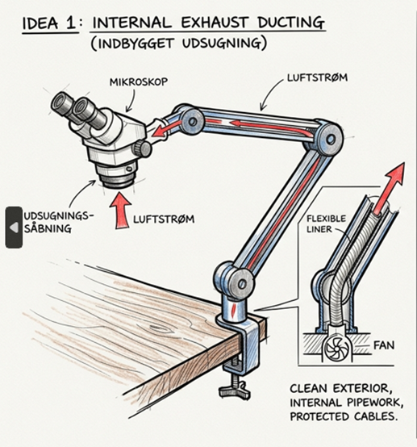
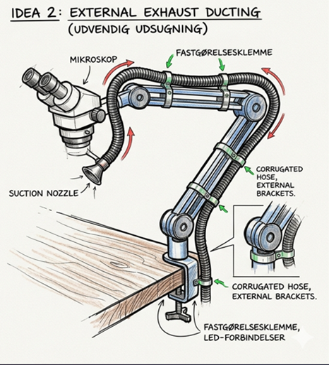
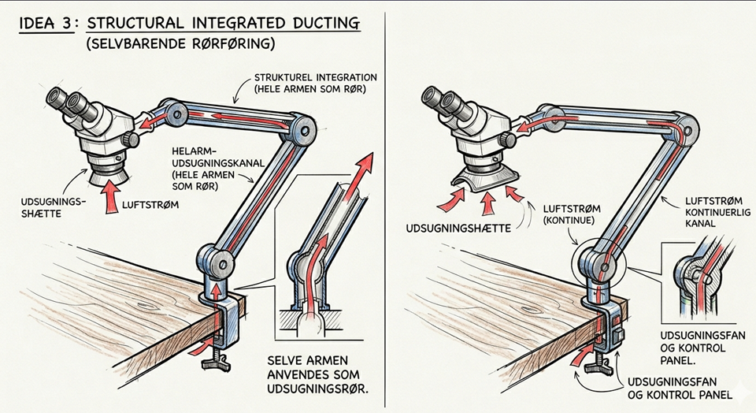
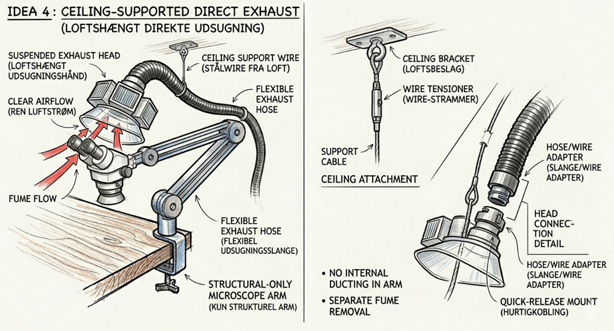
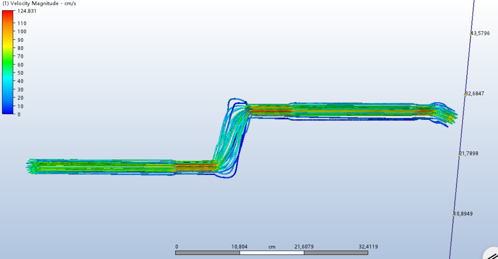
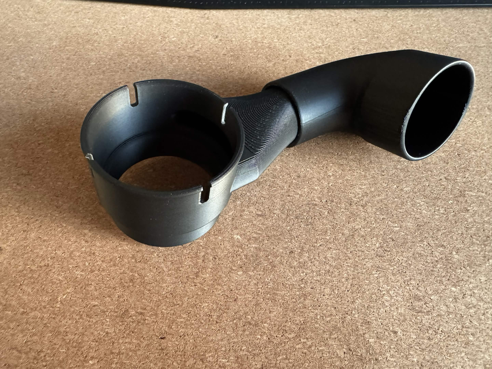
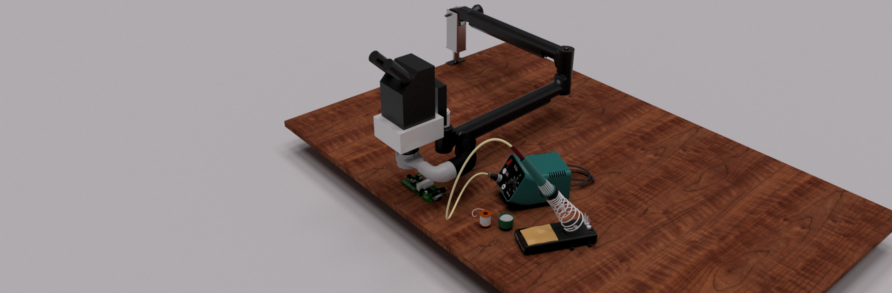
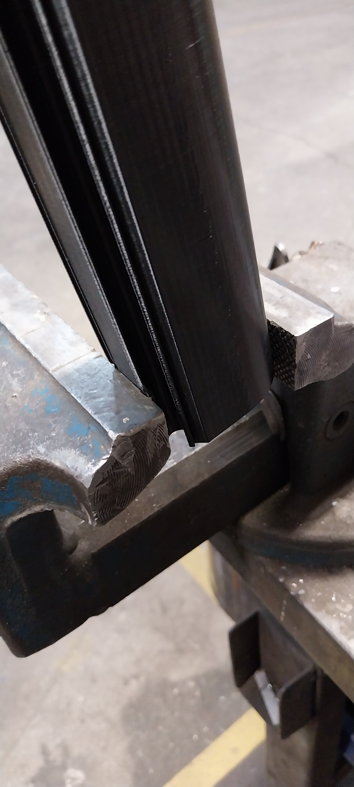

UDSUGNINGSSTYRET
ARMRØR
Armens egen profil bliver luftkanalen — dampen fanges ved kilden, uden at spærre synsfeltet eller gå på kompromis med ESD.
LODDEDAMPEN ENDER
I OPERATØRENS LUFTVEJE.

Den løse slange på bordet fanger kun en del af dampen.
- ↑ Loddedampen har opdrift og stiger lodret op — direkte mod ansigtet.
- ⊘ Slangen er forkert placeret / for langt væk, så meget slipper forbi.
- ! Kolofonium-damp → erhvervsastma (jf. HSE/BfA) — eksponering og sygefravær.
Tryk ⛶ Interaktiv for at åbne scenen i fuld skærm — se den løse bordslange og dampens vej mod ansigtet.
FEM SMART-MÅL → ÉT KONCEPT.
Defineret med Terma — målbare, accepterede, tids- og budgetbundne. Fire idéer, seks beslutningsmatricer, samme svar. Klik et SMART-mål for at se beslutningsmatricen bag det.

Indbygget udsugning

Udvendig udsugning

Armen ER kanalen▤ Beslutningsmatrice

Loftshængt udsugning
ARMRØRET FANGER
DAMPEN VED KILDEN.

Udsugningen er indbygget i mikroskoparmen — lige ved objektivet.
- → Indsuget sidder ved kilden — dampen fanges, før opdriften tager fat.
- ◷ Intet løst på bordet at flytte — frit synsfelt bevares.
- ✓ Dampen suges op gennem armen og ud i den eksterne kanal.
Tryk ⛶ Interaktiv for at åbne modellen i fuld skærm — drej leddene og slå udsugningen til/fra.
VI BEREGNEDE DET — OG TRAK DEN I STYKKER.
Tre simuleringer i Autodesk Fusion + en fysisk brudtest. Klik et billede for at se det i stort format.

Re 1830 → 5591 · laminar v. kilden, turbulent i kanal

ESD-PETG · 127 V < 170 V (Klasse 0)

σmax ≈ 10,1 MPa · SF ≈ 5,0 (krav ≥ 2,0)

Brudlast ~312 N · brudmoment 25–30 Nm · 3 fotos →
ESD-PETG — OG FAKTOR 150× BILLIGERE.
Vægtet beslutningsmatrice mod AES, ASA og PA-GF. Materialeomkostning for sugehoved, ekskl. ventilator.
FDM 3D-print, in-house. Kan opskaleres til alle stationer uden setup-omkostning.
DET STÆRKESTE ARGUMENT
ER IKKE STYKPRISEN.
Justér forudsætningerne
Sygedags-omkostning og fraværsandel er modelantagelser fra offentlige danske nøgletal. Enhedspris-besparelse = (3.000 − 19,54) kr. × antal enheder (1 pr. operatør).
Sygefravær: nu vs. med armrør (dage/år)
Akkumuleret økonomi over 5 år (kr.)
DAMPEN FANGES VED KILDEN
— UDEN AT SPÆRRE SYNSFELTET.
Impact for Terma
- → Arbejdsmiljø: reduceret eksponering for kolofonium-damp i EMS.
- → Produktivitet: frit synsfelt — ingen tab af præcision.
- → Opskalérbar: in-house print, ingen leverandørbinding.